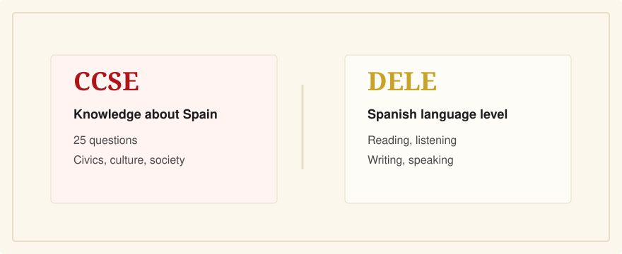

CCSE vs DELE: What's the Difference?
Last verified: June 5, 2026
CCSE tests knowledge about Spain. DELE tests your Spanish language level. For nationality by residence, many applicants need both, but they are separate exams.

CCSE is a 25-question civic and sociocultural knowledge test in Spanish. DELE A2 is a Spanish-language diploma covering reading, listening, writing, and speaking. Instituto Cervantes administers both, but passing one does not mean you have passed the other.
The Main Difference
The CCSE asks whether you know basic facts about Spain: institutions, rights and duties, territorial organization, culture, history, society, and everyday administrative life. DELE asks whether you can use Spanish at a certified level. The DELE A2 page describes A2 as the ability to understand and use frequent everyday expressions and handle simple exchanges.
Side-by-Side
- Purpose: CCSE proves civic and sociocultural knowledge; DELE proves Spanish-language competence.
- Format: CCSE is 25 multiple-choice or true/false questions; DELE A2 has reading, listening, writing, and oral components.
- Timing: CCSE lasts 45 minutes; DELE A2 is much longer across multiple skills.
- Result: CCSE result is Apto, No apto, or No presentado; DELE awards an official diploma if passed.
- Validity: Instituto Cervantes says CCSE certificates are valid for four years; DELE diplomas have indefinite validity.
Do You Need Both?
Instituto Cervantes states that the current nationality framework can require both the DELE A2 or higher and the CCSE in certain cases. There are exemptions and dispensations, especially for some Spanish-speaking nationalities, minors, people with modified legal capacity, and specific education or accessibility situations. Check official guidance for your case.
This is general information, not legal advice. Nationality requirements are legal requirements, and your documents and personal situation matter.
How To Study for Each
For CCSE, focus on the official question bank, civic vocabulary, and timed 25-question practice. For DELE, practice language skills: reading, listening, writing, and speaking. A CCSE app will not train your DELE speaking test, and a DELE course may not teach the specific CCSE facts.
Related Guides
- What is the CCSE exam?
- Do I need Spanish to pass the CCSE?
- Timeline for Spanish citizenship
- Best CCSE study resources for English speakers
Sources
- Instituto Cervantes: nationality exams overview
- Instituto Cervantes: CCSE exam format
- Instituto Cervantes: DELE A2 structure
- Instituto Cervantes: what DELE diplomas are
- Instituto Cervantes: DELE frequently asked questions
CCSE English is for the CCSE knowledge exam. It is not a DELE course and is not affiliated with Instituto Cervantes.